盛岡を知る
Walk slowly
盛岡は、歩く速さを自然と落としてくれる街です。 大きな観光地が並ぶわけでも、強く主張する風景があるわけでもありません。 それでも川の流れや古い建物、喫茶店の灯りが、 日常の中に静かに溶け込んでいます。
この街では「どこへ行くか」よりも、 「どう過ごすか」が大切にされているように感じます。 盛岡を歩くことは、景色を見ることではなく、 時間の中に身を置くことなのかもしれません。
Walk slowly
盛岡は、歩く速さを自然と落としてくれる街です。 大きな観光地が並ぶわけでも、強く主張する風景があるわけでもありません。 それでも川の流れや古い建物、喫茶店の灯りが、 日常の中に静かに溶け込んでいます。
この街では「どこへ行くか」よりも、 「どう過ごすか」が大切にされているように感じます。 盛岡を歩くことは、景色を見ることではなく、 時間の中に身を置くことなのかもしれません。
Sansa Dance Festival
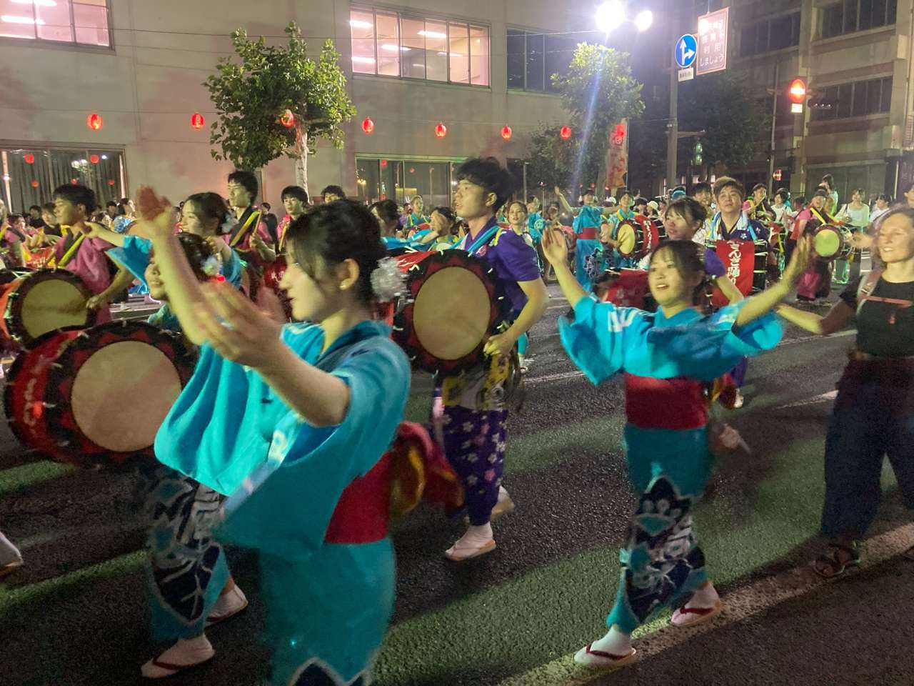
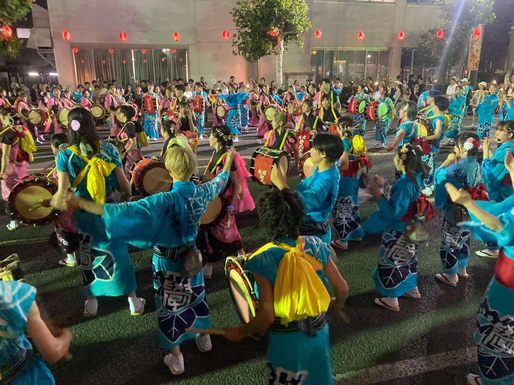
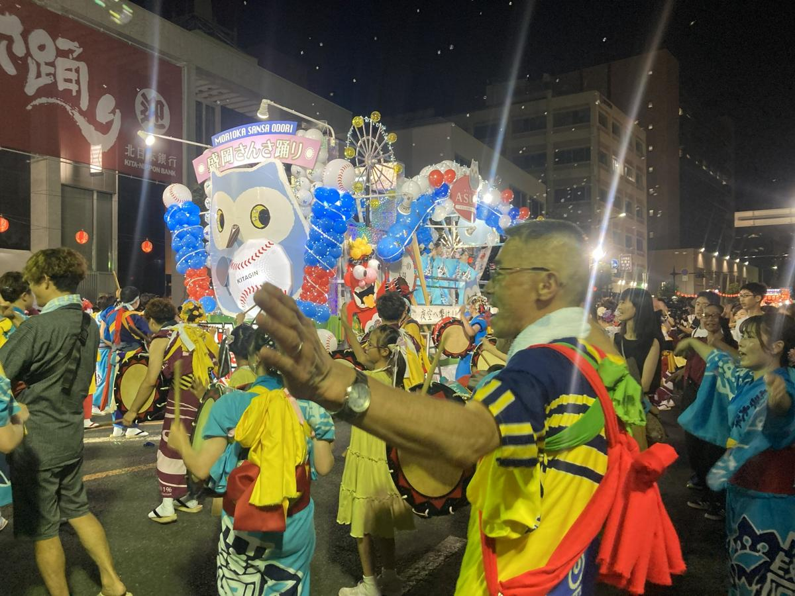
盛岡さんさ踊りは、岩手県盛岡市の夏を代表する祭りであり、 毎年八月、街の中心部を舞台に四日間にわたって行われます。
この祭りの特徴は、何よりも太鼓の数です。 数千人規模の打ち手が一斉に太鼓を打ち鳴らす様子は、 「世界一の太鼓大パレード」としてギネス世界記録にも認定されています。
踊りの起源は、鬼を退治するために踊ったという民話に由来するといわれています。 その名残から、「サッコラ チョイワヤッセ」という独特の掛け声が受け継がれ、 現在のさんさ踊りにも、そのリズムと所作が息づいています。
祭りの夜、踊っているのは出演者だけではありません。 沿道に立つ人々も、自然と手拍子を打ち、 掛け声に応え、同じリズムの中に引き込まれていきます。 知らない者同士が肩を並べ、 同じ音を共有することで生まれる一体感は、 さんさ踊りならではの風景です。
盛岡さんさ踊りは、 ただ賑やかな夏祭りというだけではなく、 街と人と時間が重なり合う、 盛岡の夏そのものを体験する行事です。
Quiet Heritage
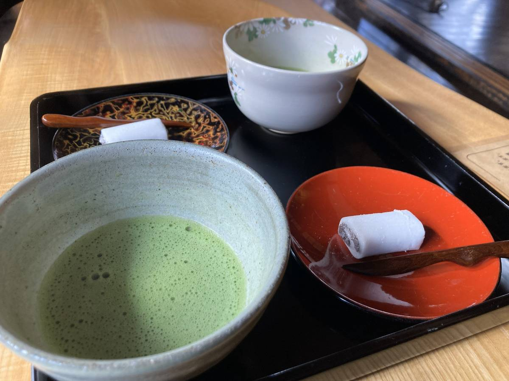
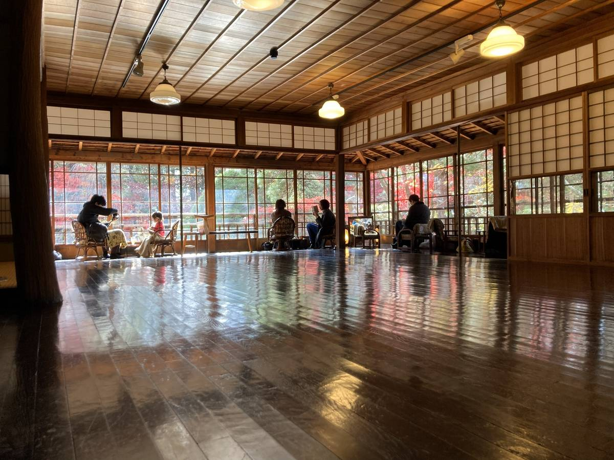
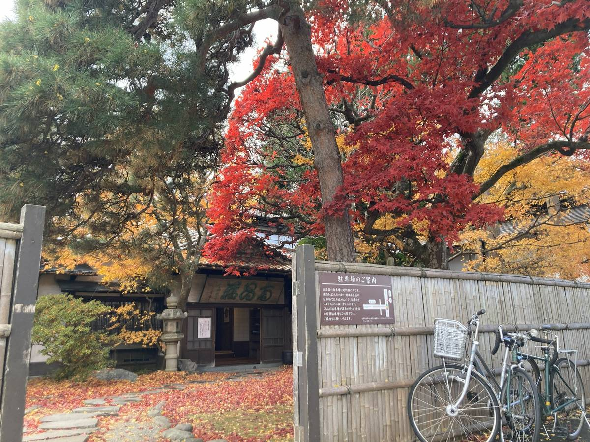
南昌荘（なんしょうそう）は、盛岡の近代と日本庭園の美意識が 静かに残る場所です。
明治期に建てられたこの邸宅は、当時の実業家の別邸として使われていました。 数寄屋造りの建物は派手さを抑えながらも、 木の質感や間の取り方に上質さが感じられます。
大きな特徴は、座敷から一望できる池泉回遊式庭園。 室内に座ったまま庭を一枚の絵のように眺めることができ、 春の新緑、夏の深い緑、秋の紅葉、冬の雪景色と、 季節ごとに異なる表情を見せてくれます。
特に秋は、障子越しに映る紅葉と 磨き込まれた床に映る光が美しく、 訪れる人が自然と声を落とすほどの静けさに包まれます。
南昌荘は観光名所でありながら、 「見る場所」というより時間を過ごす場所。 盛岡らしい“間（ま）”と静寂を、 最も感じられるスポットのひとつです。
Time flow
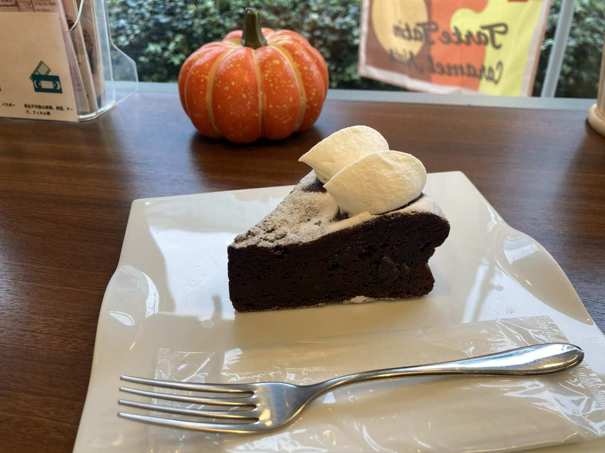

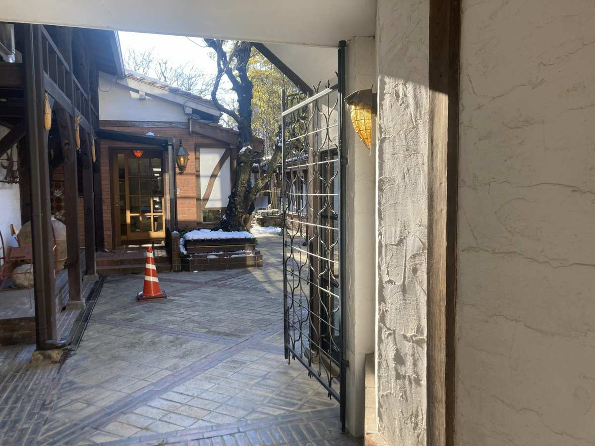
盛岡の喫茶店には、時間が少しだけゆっくり流れる感覚があります。
観光の途中に立ち寄るための場所というより、 地元の人が日常の延長として過ごす場所。 大きな音や派手な演出はなく、 カップを置く音やコーヒーの香りが空間を満たします。
木製のテーブルや年季の入った椅子、 窓から差し込むやわらかな光。 それぞれが主張しすぎることなく、 ただ「ここに居ていい」と語りかけてくるようです。
メニューは決して多くなくても、 丁寧に淹れられた一杯と、 変わらない味のお菓子がある。 その安心感が、何度でも足を運ばせます。
盛岡の喫茶店は、 何かを急いで決める場所ではありません。 旅の合間に立ち止まり、 これまで見てきた景色を 静かに整理するための場所。 そんな“余白の時間”が、ここにはあります。
Cinema & Culture
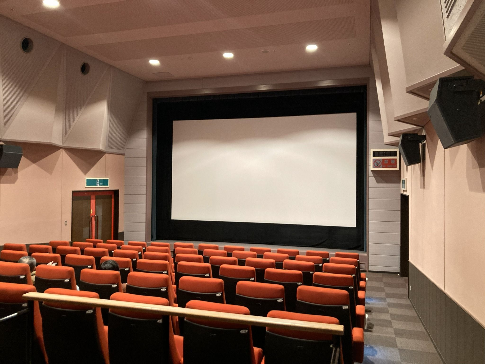
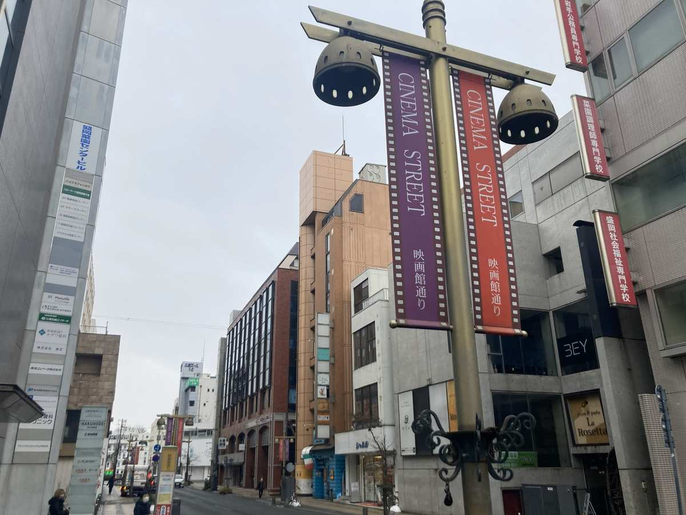
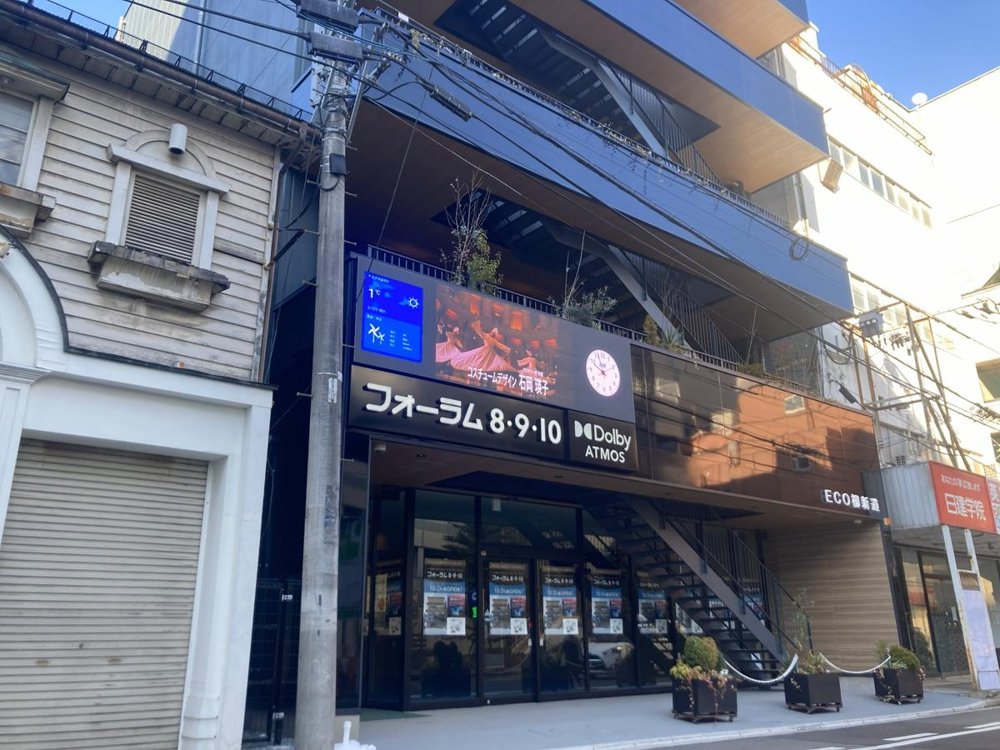
盛岡の中心には、今も「映画館通り」と呼ばれる場所があります。
派手な看板が並ぶわけでもなく、 大きな映画館が密集しているわけでもありません。 それでもこの通りには、街と映画が共にあった時間の記憶が残っています。
通りに立つ街灯や看板には、 映画という文化を大切にしてきた盛岡の姿勢がにじみます。 作品を「消費する」のではなく、 生活の一部として受け入れてきた街。
映画館通りは、 盛岡が積み重ねてきた文化の静かな証。 何気なく歩くことで、その時間に触れられる場所です。
このページは、実際に歩いた盛岡の記憶をもとに構成しています。
観光案内ではなく、街の時間に触れた感覚を残すことを目的としています。